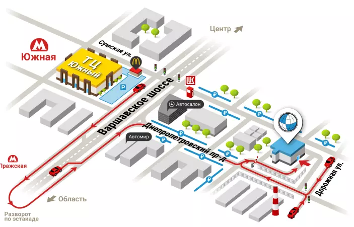

Контакты
Полное официальное название учреждения:
Федеральное государственное бюджетное учреждение «Государственный научный центр
дерматовенерологии и косметологии» Министерства здравоохранения Российской Федерации
Сокращенное название учреждения:
ФГБУ «ГНЦДК» Минздрава России
Адрес:
107076, г. Москва, ул. Короленко, дом 3 стр. 6
Реквизиты:
ИНН 7718710585
ОГРН 1087746788095
Телефоны:
- (499) 785-20-40 – Регистратура (многоканальный)
- (499) 785-20-45 – Запись на прием в отделение косметологии
- (499) 785-20-24 – Старший менеджер по организации медицинских услуг
- (499) 785-20-16 – Канцелярия
- (499) 785-20-35 – Бухгалтерия
- (499) 785-20-16 – Факс
- (499) 785-20-86 или (499) 785-20-39 – Госпитализация
- (499) 785-20-15 – Приемная директора
e-mail:
info@cnikvi.ru
Часы работы консультативно-диагностического центра, осуществляющего амбулаторно-поликлинический
приём пациентов:
- Понедельник - пятница с 8:30 - 21:00
- Суббота - воскресенье с 10:00 - 18:00
Часы работы приемного отделения:
Понедельник - пятница с 9:00 - 14:00
Часы работы дневного стационара:
Ежедневно с 9:00 до 17:15
Часы работы круглосуточного стационара:
Ежедневно круглосуточно
Часы приема граждан директором ФГБУ "ГНЦДК" Минздрава России
Каждый понедельник: 14:00 - 18:00
Как проехать до ГНЦДК:
м. Сокольники, далее на любом виде общественного транспорта в сторону Преображенской
площади до остановки «РГСУ» или «ул.Короленко».
Маршрут на карте
Схема проезда

Схема расположения корпусов
Сергиево-Посадский филиал Федерального государственного бюджетного учреждения «Государственный
научный центр дерматовенерологии и косметологии» Министерства здравоохранения Российской
Федерации.
Адрес
141321, обл. Московская, р-н Сергиево- Посадский, пос. Зелёная Дубрава
Телефон:
8 (906) 044-23-74 – Приемная
e-mail:
spf@spfcnikvi.ru
Часы работы филиала:
Понедельник - пятница с 8:30 - 16:30
Нижегородский филиал Федерального государственного бюджетного учреждения "Государственный
научный центр дерматовенерологии и косметологии" Министерства здравоохранения Российской
Федерации.
Адрес
603950, Нижний Новгород, улица Ковалихинская, 49Г.
Телефон:
(831) 419-97-68 - Регистратура консультативно
+7 952 786 64 83 - диагностического центра
+7 910 140 09 25 - Отделение косметологии
+7 987 532 67 46 - По вопросам госпитализации (стационар)
e-mail:
info@nnikvi.ru
Часы работы филиала:
Понедельник - пятница с 8:30 - 16:30
Суббота: 9:00 - 15:00